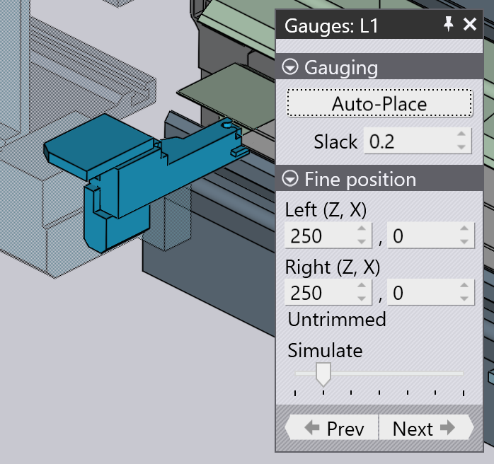

编辑止挡件
每个边（或区域）的第一个折弯需要根据_后挡料_调基准，以便零件在被工件机械手抓住之前精确地定位。对于手动机床，止挡件移动到压边模后的位置，操作员对零件调基准[1].

要打开止挡件面板：
-
选择一边的第一个折弯。当止挡件在模拟中可见时，点击它们。
-
打开导航器，然后单击止挡件单元。止挡件面板有一些操作和设置：
-
自动计算 设置用于计算用于止挡件的自动位置。当您切换到折弯模式面板时，所有边都会执行此操作。但是，在您手动将止挡件移动到不同位置时，此按钮可用于重置回默认位置。此外，TecZone Fold还计算止挡件的一组可能位置，每次点击此按钮，它将显示止挡件的下一个可行位置（可能环绕第一个位置）。
-
间距 设置是止挡件之间的额外开口（这对应于机床对中设置中的D Z1-Z2参数）。这可以用来稍微打开止挡件，使其更容易插入零件。
-
左（Z、X） 设置指定左止挡件的Z和X位置。Z位置是从板坯中心线测量的距离，X位置相对于板坯的引导边缘。当您调整这些值时，止挡件会立即移动并执行检查：- 如果止挡件未触及零件，您将收到止挡件未接合
 的错误。- 如果止挡件移动使其与工件碰撞，您会得到止挡件与零件碰撞
的错误。- 如果止挡件移动使其与工件碰撞，您会得到止挡件与零件碰撞 的错误。
的错误。 -
右（Z、X） 设置用于设定右止挡件的Z和X位置。
-
模拟 滑块可用于在这一步的模拟中移动。
-
返回 和*继续*按钮用于切换到零件的另一边，然后您可以编辑这些边的止挡设置。